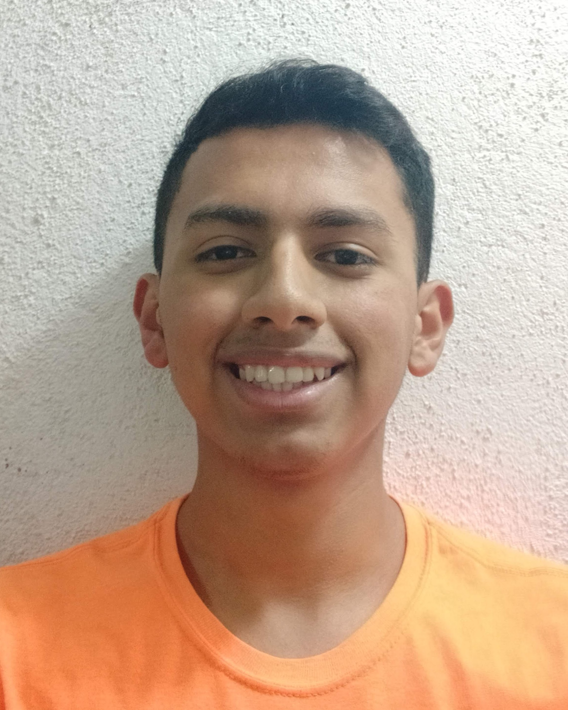
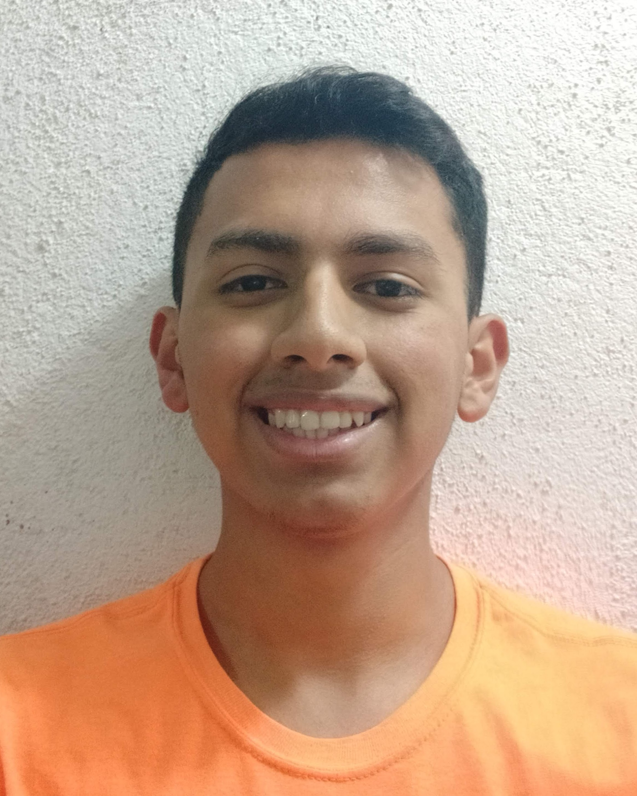

| Datos Personales: |
|---|
|  Nombre: Arnoldo Luis Antonio González Camey Fecha de nacimiento: 16 de diciembre de 1998 Edad: 22 años Dirección: Mixco, Guatemala Teléfono: 4586-4916 |
| Datos Personales: |
|---|
|  Nombre: Arnoldo Luis Antonio González Camey Fecha de nacimiento: 16 de diciembre de 1998 Edad: 22 años Dirección: Mixco, Guatemala Teléfono: 4586-4916 |
| Formación académica: | |
|---|---|
| Universidad de San Carlos de Guatemala | Estudiante de Ingenieria en Ciencias y Sistemas Créditos aprobados: 95 2019-2020 |
| Universidad de San Carlos de Guatemala | Estudiante de Licenciatura en Arquitectua Créditos aprobados: 27 2017 |
| Colegio Americano de Guatemala | Título en Bachiller en Ciencias y Letras 2014-2016 |
| Centro Educativo "El Hogar" | Diploma en educación Básica 2012-2014 |
| Reconociemtos académicos: | |
|---|---|
| 2016 | Título de Bachiller en Ciencias y Letras Graduado del Programa de Bachillerato Avanzado con Beca Completa. |
| 2016 | High School Honor Roll del Colegio Americano de Guatemala. |
| 2016 | Finalista del ALA Yearbook Cover. |
| 2016 | High School Table Tennis Team. |
| Habilidades: |
|---|
| Desarrollo de habilidades comunicativas en la realización de presentaciones en seminarios. |
| Trabajo en equipo, desarrollado en proyectos de distinto índole. |
| Desarrollo y capacidad de comunicación a nivel verbal y escrito |
| Capacidad analítica, actitud de seriedad laboral, puntualidad y responsabilidad en cada una de las tareas asignadas. |
| Metas y Objetivos: |
|---|
| Desarrollar mis capacidades en el área de Ciencias Sistemas |
| Cumplir las expectativas impuestas por mi persona tanto el área estudiantil como en el personal |
| Mejorar la forma en que organizo mi tiempo con las actividades que tengo |